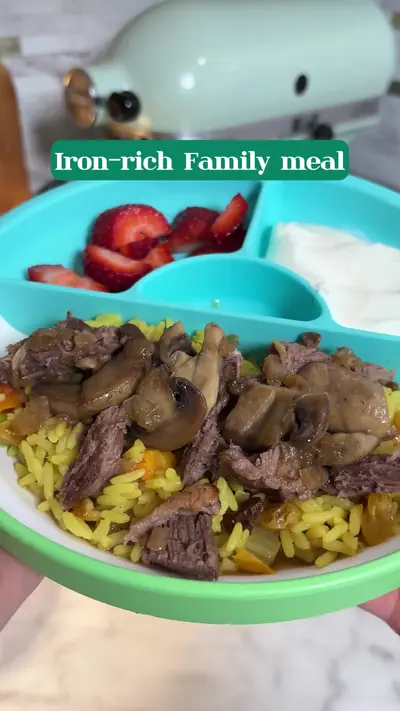

One meal for the whole family

Ingredients
- 1 lb lamb
- 1 small onion
- 3 garlic cloves
- 4 oz mushrooms
- 1 tbsp olive oil
- 2 tbsp butter
- ½ tsp oregano
- ½ tsp black pepper
- 1 dash cinnamon
- Salt (skip for babies under 1)
- ½ cup water
Steps
- Brown lamb in butter and olive oil.
- Add onion, garlic, and spices.
- Cover and cook 10 minutes.
- Add water and slow cook for 1 hour until tender.
- Sauté mushrooms separately and mix in at the end.
- Serve with rice or mashed potatoes.
- Meals like this are exactly why I created my app
Recipe text as written by @soniamazri on TikTok. Open original